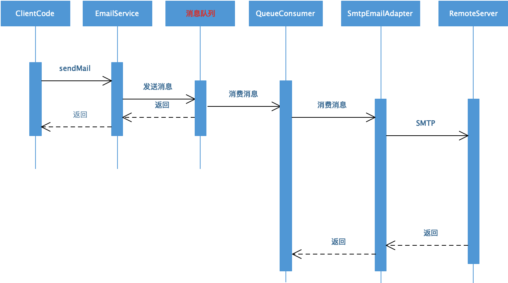
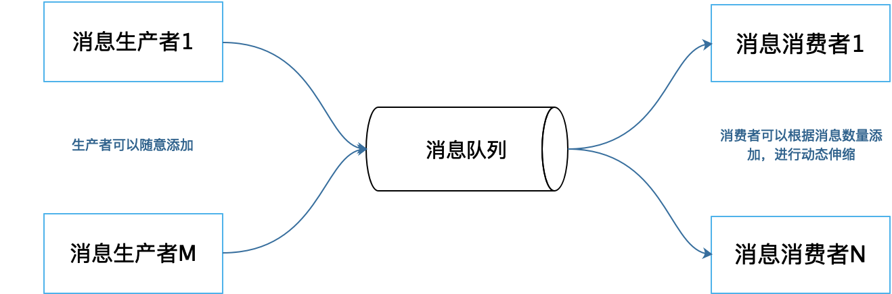
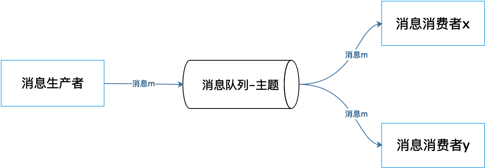
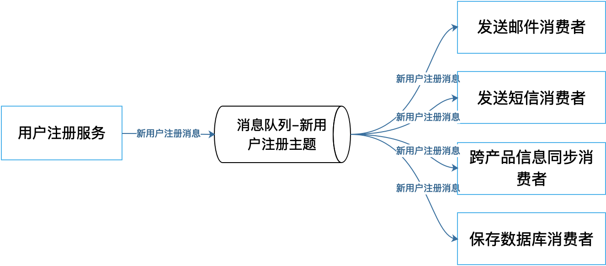
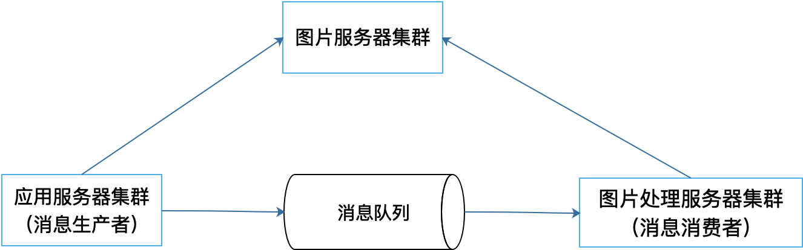

- 00 开篇词 掌握软件开发技术的第一性原理.md
- 01 程序运行原理：程序是如何运行又是如何崩溃的？.md
- 02 数据结构原理：Hash表的时间复杂度为什么是O(1)？.md
- 03 Java虚拟机原理：JVM为什么被称为机器（machine）？.md
- 04 网络编程原理：一个字符的互联网之旅.md
- 05 文件系统原理：如何用1分钟遍历一个100TB的文件？.md
- 06 数据库原理：为什么PrepareStatement性能更好更安全？.md
- 07 答疑 Java Web程序的运行时环境到底是怎样的？.md
- 07 编程语言原理：面向对象编程是编程的终极形态吗？.md
- 08 软件设计的方法论：软件为什么要建模？.md
- 09 软件设计实践：如何使用UML完成一个设计文档？.md
- 10 软件设计的目的：糟糕的程序员比优秀的程序员差在哪里？.md
- 11 软件设计的开闭原则：如何不修改代码却能实现需求变更？.md
- 12 软件设计的依赖倒置原则：如何不依赖代码却可以复用它的功能？.md
- 13 软件设计的里氏替换原则：正方形可以继承长方形吗？.md
- 14 软件设计的单一职责原则：为什么说一个类文件打开最好不要超过一屏？.md
- 15 软件设计的接口隔离原则：如何对类的调用者隐藏类的公有方法？.md
- 16 设计模式基础：不会灵活应用设计模式，你就没有掌握面向对象编程.md
- 17 设计模式应用：编程框架中的设计模式.md
- 18 反应式编程框架设计：如何使程序调用不阻塞等待，立即响应？.md
- 19 组件设计原则：组件的边界在哪里？.md
- 20 答疑 对于设计模式而言，场景到底有多重要？.md
- 20 领域驱动设计：35岁的程序员应该写什么样的代码？.md
- 21 分布式架构：如何应对高并发的用户请求.md
- 22 缓存架构：如何减少不必要的计算？.md
- 23 异步架构：如何避免互相依赖的系统间耦合？.md
- 24 负载均衡架构：如何用10行代码实现一个负载均衡服务？.md
- 25 数据存储架构：如何改善系统的数据存储能力？.md
- 26 搜索引擎架构：如何瞬间完成海量数据检索？.md
- 27 微服务架构：微服务究竟是灵丹还是毒药？.md
- 28 高性能架构：除了代码，你还可以在哪些地方优化性能？.md
- 29 高可用架构：我们为什么感觉不到淘宝应用升级时的停机？.md
- 30 安全性架构：为什么说用户密码泄漏是程序员的锅？.md
- 31 大数据架构：大数据技术架构的思想和原理是什么？.md
- 32 AI与物联网架构：从智能引擎到物联网平台.md
- 33 区块链技术架构：区块链到底能做什么？.md
- 33 答疑 互联网需要解决的技术问题是什么？.md
- 34 技术修炼之道：同样工作十几年，为什么有的人成为大厂架构师，有的人失业？.md
- 35 技术进阶之道：你和这个星球最顶级的程序员差几个等级？.md
- 36 技术落地之道：你真的知道自己要解决的问题是什么吗？.md
- 37 技术沟通之道：如何解决问题？.md
- 38 技术管理之道：你真的要转管理吗？.md
- 38 答疑 工作中的交往和沟通，都有哪些小技巧呢？.md
- 加餐 软件设计文档示例模板.md
- 结束语 期待未来的你，成为优秀的软件架构师.md
23 异步架构：如何避免互相依赖的系统间耦合？
上一篇文章中我们讨论过，使用缓存架构可以减少不必要的计算，快速响应用户请求。但是缓存只能改善系统的读操作性能，也就是在读取数据的时候，可以不从数据源中读取，而是通过缓存读取，以加速数据读取速度。
但是对于写操作，缓存是无能为力的。虽然缓存的写入速度也很快，但是通常情况下，我们不能把用户提交的数据直接写入缓存中，因为缓存通常被认为是一种不可靠的存储。缓存通常无法保证数据的持久性和一致性等这些数据存储的基本要求，因此数据写操作还是需要写入到RDBMS或者NoSQL数据库中，但是数据库操作通常都比较慢。
那么如何提高系统的写操作的性能呢？
此外，两个应用系统之间需要远程传递数据，常规的做法就是直接进行远程调用，用HTTP或者其他RMI方式进行远程调用。但是这种方式其实是把两个应用耦合起来了，被调用的应用产生了故障或者升级，都可能会引起调用者故障，或者也不得不升级。
这种系统间的耦合情况又该如何避免呢？
解决以上问题的主要手段就是使用消息队列的异步架构，有时候也被称为事件驱动架构。
使用消息队列实现异步架构
消息队列实现异步架构是目前互联网应用系统中一种典型的架构模式。所谓异步架构是和同步架构相对应的。同步架构是说，当应用程序调用服务的时候，当前程序需要阻塞等待服务完成，返回服务结果后才能继续向下执行。
如下图例子：
应用程序代码ClintCode需要发送邮件，调用接口服务EmailService，实现了EmailService接口的SmtpEmailAdapter通过SMTP协议与远程服务器通信，远程邮件服务器可能有很多邮件在等待发送，当前邮件可能要等待较长时间才能发送成功，发送成功后再通过远程通信返回结果给应用程序。
在这个过程中，当远程服务器发送邮件的时候，应用程序必须阻塞等待。准确地说，是执行应用程序代码的线程被阻塞。这种阻塞，一方面导致线程不能释放被占用的系统资源，导致系统资源不足，影响系统性能。另一方面，也导致无法快速给用户返回响应结果，用户体验较差。此外，如果远程服务器出现异常，这个异常会传递给应用程序ClientCode，如果应用程序没有妥善处理好这个异常，就会导致整个请求处理失败。
事实上，在大部分应用场景下，发送邮件是不需要得到发送结果的，比如用户注册的时候，发送账号激活邮件，无论邮件是否发送成功，都可以给用户返回“激活邮件已经发送，请查收邮件确认激活”。如果发送失败，只需要提示用户“点击重新发送”，再次发送邮件即可。
那么如何使应用程序不阻塞等待呢？解决方案就是使用消息队列实现异步架构。
如下图所示：

应用程序ClientCode调用EmailService的时候，EmailService将调用请求封装成一个邮件发送消息发送给消息队列，然后就直接返回了，应用程序收到返回以后就可以继续执行，快速完成用户响应，释放系统资源。而发送给消息队列的邮件发送消息，则会被一个专门的消息队列消费者程序QueueConsumer消费掉，这个消费者通过SmtpEmailAdapter调用远程服务器，完成邮件发送。如果远程服务处理异常，这个异常只会传递给消费者程序QueueConsumer，而不会影响到应用程序。
典型的消息队列异步架构如下：
消息队列异步架构的主要角色包括消息生产者、消息队列和消息消费者。消息生产者通常就是主应用程序，生产者将调用请求封装成消息发送给消息队列。此外还需要开发一个专门的消息消费者程序，用来从消息队列中获取、消费消息，由消息消费者完成业务逻辑处理。
消息队列的职责就是缓冲消息，等待消费者消费。根据消息消费方式又分为点对点模式和发布订阅模式两种。
在点对点模式中，多个消息生产者向消息队列发送消息，多个消息消费者消费消息，每个消息只会被一个消息消费者消费。
如下图：

上面举例的发送邮件的场景就是一个典型的点对点模式场景。任何需要发送邮件的应用程序都可以作为消息生产者向消息队列发送邮件消息。而通过SMTP协议，调用远程服务发送邮件的消息消费者程序可以部署在多台服务器上，但是对于任何一个消息，只会被发送给其中的一个消费者服务器。这些服务器可以根据消息的数量动态伸缩，保证邮件能及时发送。如果有某台消费者服务器宕机，既不会影响其他消费者处理消息发送邮件，也不会影响生产者程序正常运行。
在发布订阅模式中，开发者可以在消息队列中设置主题，消息生产者的消息按照主题进行发送，多个消息消费者可以订阅同一个主题，每个消费者都可以收到这个主题的消息拷贝，然后按照自己的业务逻辑分别进行处理计算。
如下图：

消息生产者向消息队列某个主题发布消息m，多个消息消费者订阅该主题，就会分别收到这个消息m。典型场景就是新用户注册，新用户注册的时候一方面需要发送激活邮件，另一方面可能还需要发送欢迎短信，还可能需要将用户信息同步给关联产品，当然还需要将用户信息保存到数据库中。
这种场景也可以用点对点模式，由应用程序，也就是消息生产者构造发送邮件的消息，发送到邮件消息队列，以及构造短信消息，构造新用户消息，构造数据库消息分别发送到相关的消息队列里，然后由对应的消息消费者程序分别获取消息进行处理。
但更好的处理方式是使用发布订阅模式。在消息队列中创建“新用户注册”主题，应用程序只需要发布包含新用户注册数据的消息到该主题中，相关消费者再订阅该主题即可。不同的消费者都订阅该主题，得到新用户注册消息，然后根据自己的业务逻辑从消息中获取相关的数据，进行处理。
如下图所示：

发布订阅模式下，一个主题可以被重复订阅，所以如果需要扩展功能，可以在对当前的生产者和消费者都没有影响的前提下，增加新的消费者订阅同一个主题即可。
消息队列异步架构的好处
使用消息队列实现异步架构可以解决文章开篇提出的问题，实现更高的写操作性能以及更低的耦合性。让我们总结一下，使用消息队列的异步架构都有什么好处。
改善写操作请求的响应时间
使用消息队列，生产者应用程序只需要将消息发送到消息队列之后，就可以继续向下执行了，无需等待耗时的消息消费处理，也就是说，可以更快速地完成请求处理操作，快速响应用户。
更容易进行伸缩
我在[第4篇文章]中说过，应用程序也可以通过负载均衡实现集群伸缩，但是这种集群伸缩是以整个应用服务器为单位的。如果只是其中某些功能有负载压力，比如当用户上传图片，需要对图片进行识别、分析、压缩等一些比较耗时的计算操作时，也需要伸缩整个应用服务器集群。
事实上，图片处理只是应用的一个相对小的功能，如果因为这个就对应用服务器集群进行伸缩，代价可能会比较大。如果用消息队列，将图片处理相关的操作放在消费者服务器上，那么就可以单独针对图片处理的消费者集群进行伸缩。

削峰填谷
互联网应用的访问压力随时都在变化，系统的访问高峰和低谷的并发压力可能也有非常大的差距。如果按照压力最大的情况部署服务器集群，那么服务器在绝大部分时间内都处于闲置状态。但利用消息队列，我们可以将需要处理的消息放入消息队列，而消费者可以控制消费速度，因此能够降低系统访问高峰时压力，而在访问低谷的时候还可以继续消费消息队列中未处理的消息，保持系统的资源利用率。
隔离失败
使用消息队列，生产者发送消息到消息队列后就继续自己后面的计算，消费者如果在处理消息的过程中失败，不会传递给生产者，应用程序具有更高的可用性。
降低耦合
如上面发送邮件的例子所示，如果调用是同步的，那么意味着调用者和被调用者必然存在依赖，一方面是代码上的依赖，应用程序需要依赖发送邮件相关的代码，如果需要修改发送邮件的代码，就必须修改应用程序，而且如果要增加新的功能，比如发送短信，也必须修改应用程序；另一方面是结果的依赖，应用程序必须要等到返回调用结果才能继续执行，如果调用出现异常，应用程序必须要处理这个异常。
我们知道，耦合会使软件僵硬、笨拙、难以维护，而使用消息队列的异步架构可以降低调用者和被调用者的耦合。调用者发送消息到消息队列，不需要依赖被调用者的代码和处理结果，增加新的功能，也只需要增加新的消费者就可以了。
小结
消息队列实现异步架构是改善互联网应用写操作性能的重要手段，也是一种低耦合、易扩展的分布式应用架构模式。但是使用这种架构有些方面也需要注意。
比如，消费者程序可能没有完成用户请求的操作，上面发送邮件的例子，消费者程序发送邮件的时候可能会遇到各种问题，从而未完成邮件发送。
邮件的问题还比较简单，比如可以提示用户：“如果未收到邮件，点击按钮重新发送。”但是如果是提交订单，或者发起支付的话，就需要更复杂的用户交互和处理方法了。比如将订单消息发送到消息队列后，就立即返回，这个时候可以在用户端App展现一个进度条，提示用户“订单处理中”，等消费者程序完成订单处理后，发送消息给用户App，显示最终的订单结果信息。
思考题
异步架构中最主要的技术就是消息队列，目前主要的消息队列产品有哪些？各有什么优缺点？
欢迎你在评论区说说你对消息队列产品的了解，我会和你一起交流，也欢迎把这篇文章分享给你的朋友或者同事，一起交流一下。
© 2019 - 2023 Liangliang Lee. Powered by gin and hexo-theme-book.